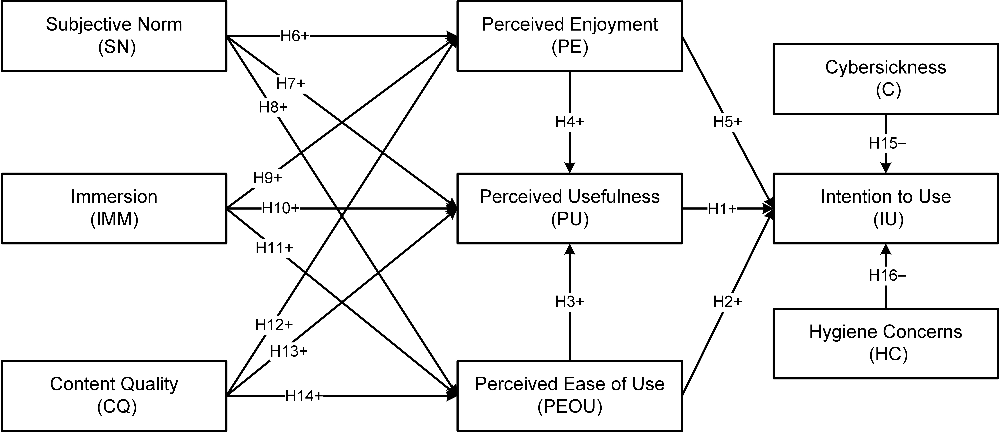
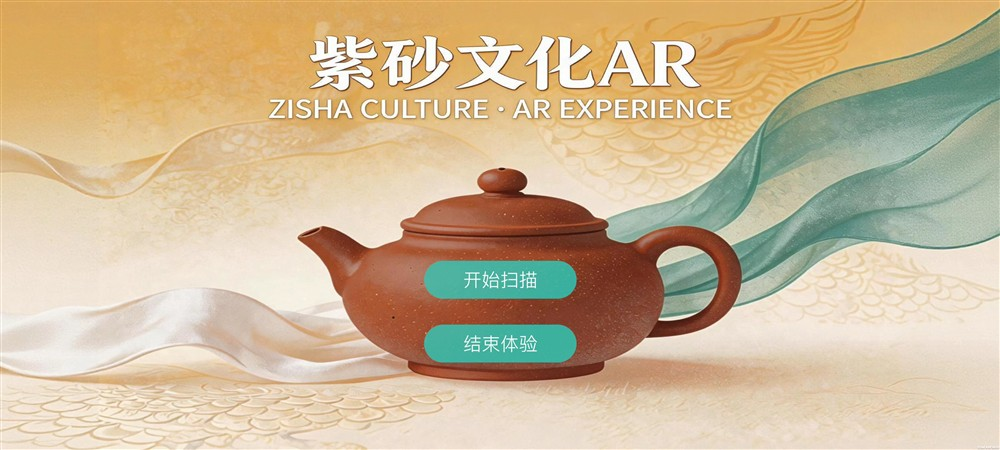
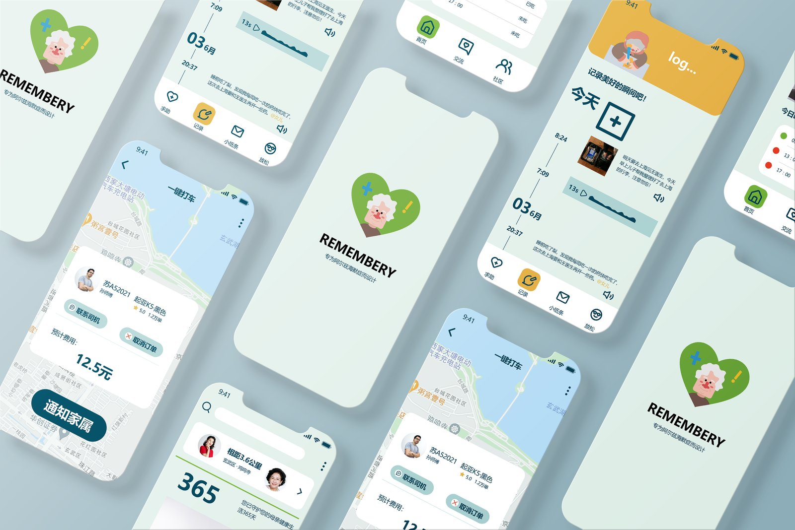
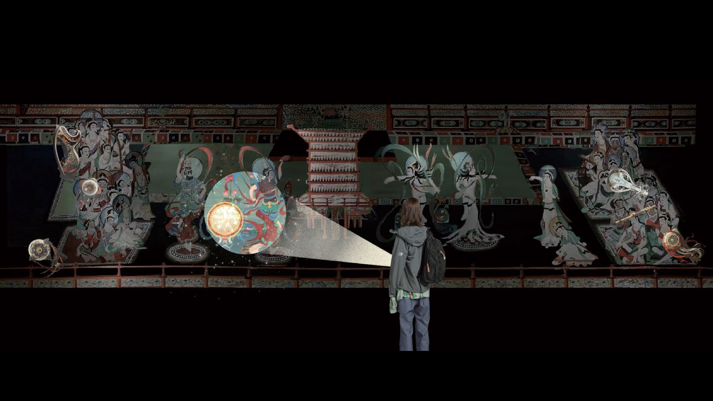
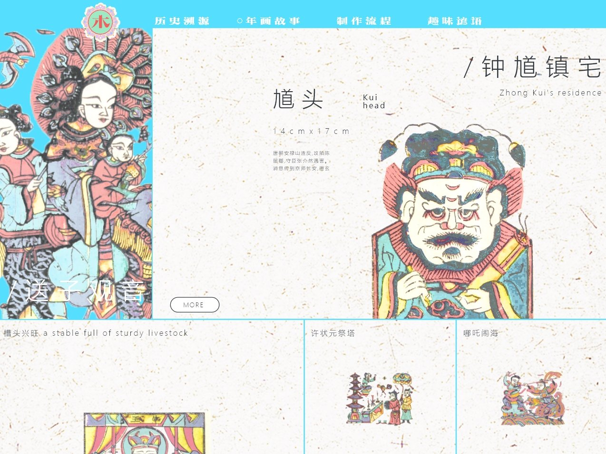
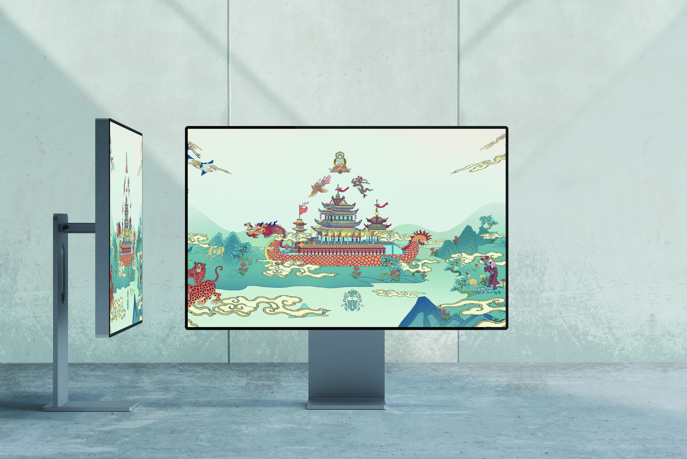
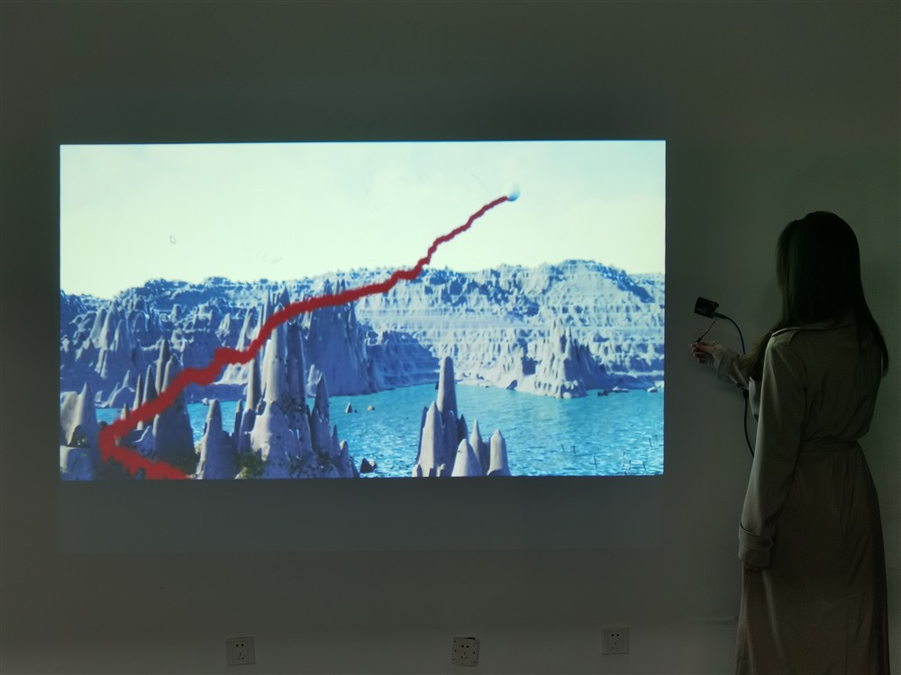
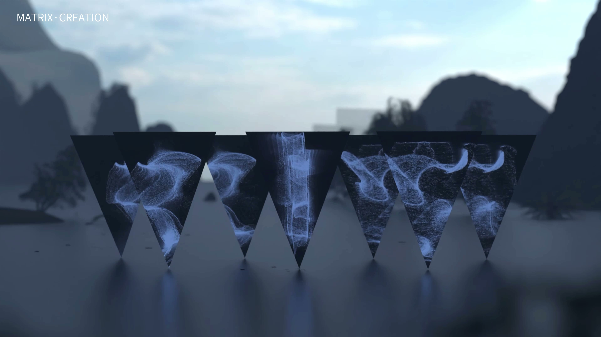

Heritage · 2025 · Co-first author
VR Acceptance in Cultural Heritage
A mixed-methods study combining 566 survey responses with 20 semi-structured interviews.
Research studies, interface design and interactive prototypes.
13 projects

Heritage · 2025 · Co-first author
A mixed-methods study combining 566 survey responses with 20 semi-structured interviews.

Master's thesis · 2026
A Unity / Vuforia prototype and a 388-response study of AR experiences for traditional craft.
Evaluation, participation and design responsibilities.
Manuscript in preparation
A systematic review of how accessibility claims are evaluated and how disabled people participate in GenAI research.


Independent web application
An editable poster-making tool for working with type, shapes, ink and paper.
Try CUT / PRINT
Interface design concept
A mobile service concept for people living with Alzheimer's disease and their support network.

Interactive installation
An installation in which visitors use a handheld light to activate projected images and sound.

Interactive installation
An Arduino and TouchDesigner installation connecting sensor input to real-time visuals.

Tablet interface prototype
A tablet experience presenting the imagery and craft of traditional woodblock prints.

Website redesign concept
A website redesign concept for the Nanjing University of the Arts Museum.

Exhibition interface prototype
A large-screen museum interface for exploring brocade patterns and craft knowledge.

Interactive installation
A physical-computing exploration connecting bodily input with a projected environment.

Digital media installation
An installation combining plant forms, artificial materials and digital imagery.

3D motion study
A series of 3D particle compositions developed from cultural imagery and artefacts.